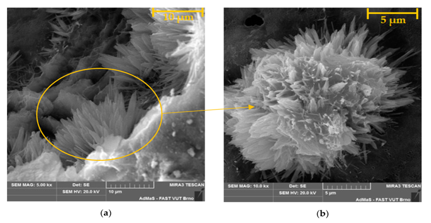
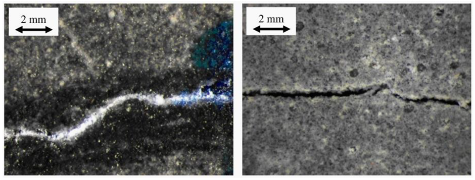

افزودنی های آب بند کریستالی بتن؛ مزایا و نحوه عملکرد
افزودنی های آب بند کریستالی بتن؛ مزایا و نحوه عملکرد (Crystalline Waterproofing Admixture)
عملکرد افزودنی های آب بند کریستالی بتن:
کلسیم هیدروکسید (Ca(OH)2) و سایر مواد حاصل از واکنش هیدراتاسیون سیمان و همچنین سیمان های هیدراته نشده در بتن در حضور رطوبت با افزودنی های آب بند کریستالی بتن (Crystalline Admixture) واکنش داده و مواد دارای شکل کریستالی سوزنی غیر قابل حل در آب را ایجاد می کنند. این کریستال ها به وسیله ساختار منافظ بتن محصور شده اند و با رشد و کامل شدن واکنش های کریستالی منافذ بتن پر شده و ارتباط آنها به یکدیگر نیز از بین می رود و بدین ترتیب نفوذپذیری بتن به وسیله افزودنی های آب بند کیستالی بتن به شدت کاهش یافته و مقاومت فشاری بتن نیز افزایش می یاید.

مزایای افزودنی های آب بند کریستالی بتن:
- کاهش نفوذپذیری بتن و آب بندی تحت فشار مثبت و منفی بتن
- افزایش مقاومت بتن در برابر خوردگی و نفوذ املاح خورنده مانند کلر، سولفات و ...
- ایجاد خودترمیمی و پل زدن ترک های استاتیک با ضخامت کوچکتر از 400 میکرون
- افزایش مقاومت مکانیکی بتن
- دوام بیشتر بتن در سیکل های یخبندان
- افزایش مقاومت بتن در برابر سولفات و فاضلاب ها
- افزایش مقاومت بتن در برابر واکنش قلیایی-سیلیکاتی سنگدانه ها (ASR)
همچنین بر اساس بررسی های انجمن بتن امریکا (ACI) که در گزارش ACI 212.3R عنوان شده، افزودنی های آب بند کریستالی بتن (Crystalline Admixtures) برای آب بندی بتن تحت فشار آب بهترین عملکرد را دارا می باشد.
عملکرد خودترمیمی افزودنی های آب بند کریستالی بتن:

- محصولات مرتبط استرامیکس (شرکت بسپار بتن ایرانیان هوشمند):
STRUSEAL C512: افزودنی آب بند کننده کریستالی داخلی بتن با عملکرد خود ترمیمی رشد یابنده
STRUSEAL C513: افزودنی آب بند کننده و آبگریز کننده کریستالی داخلی بتن با عملکرد خود ترمیمی رشد یابنده
بهترین مطالب هر ما
ارسال میشه به صندوق پستی شما!
این بالا کلیک کن و ایمیلت رو بنویس
ثبت